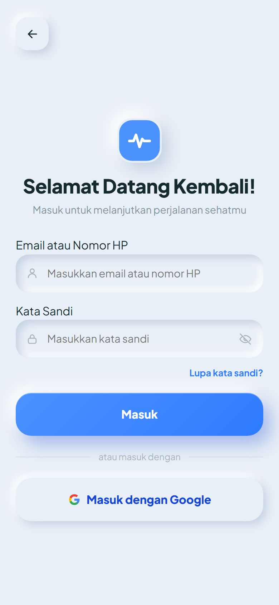
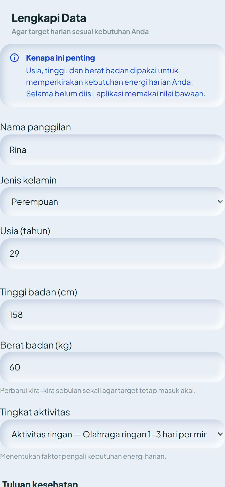
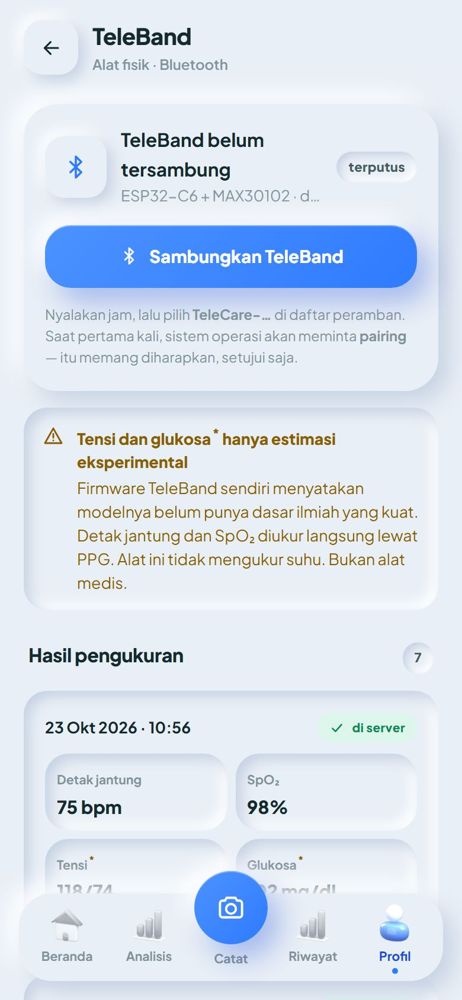
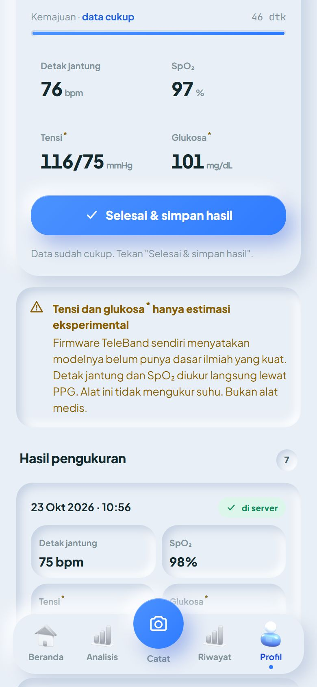
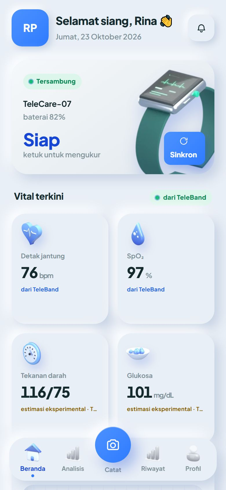
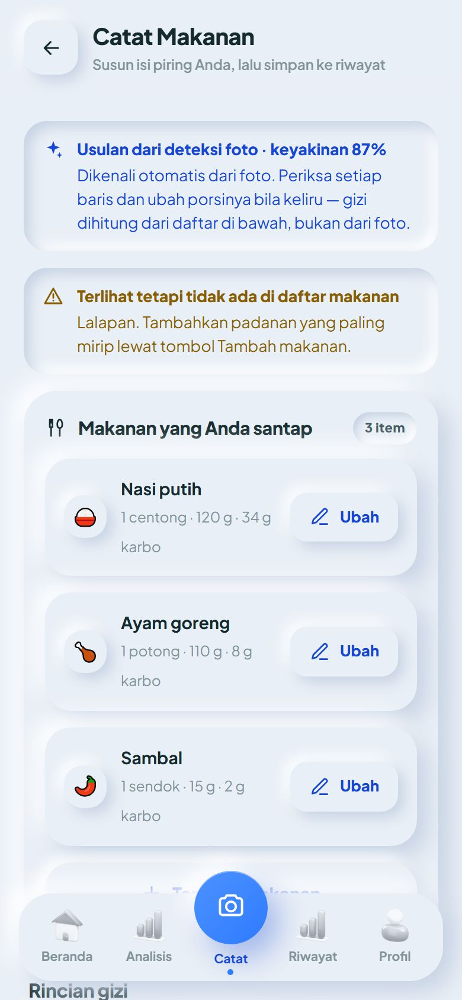
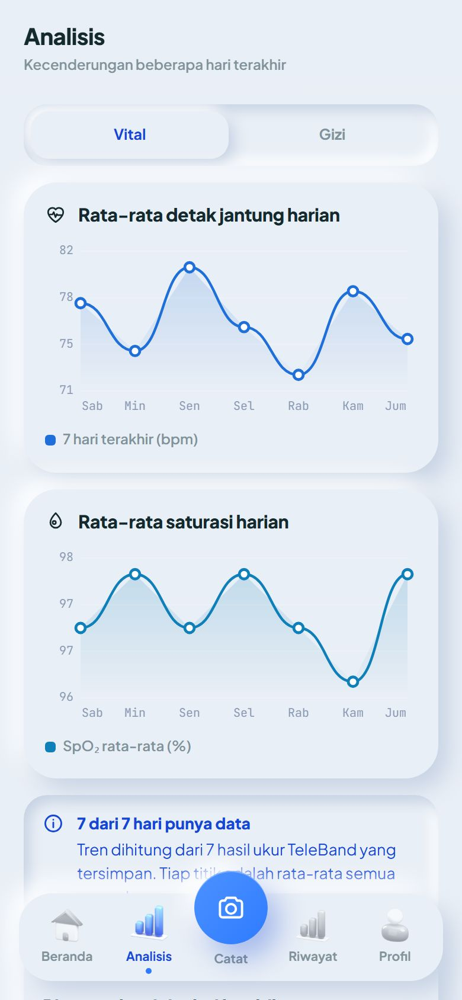
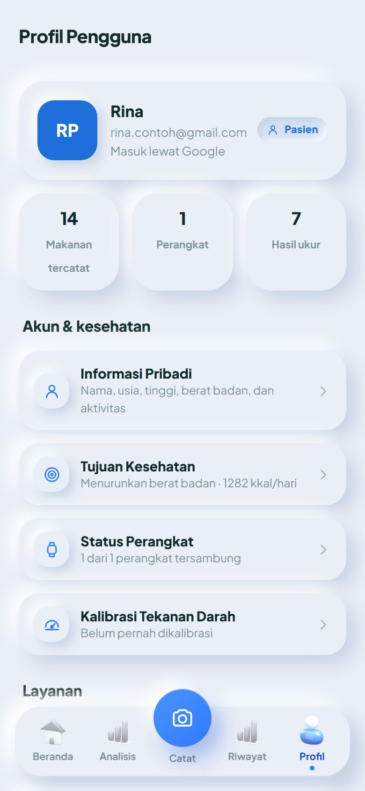
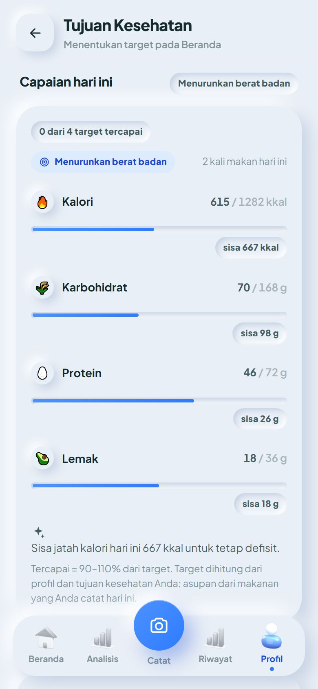
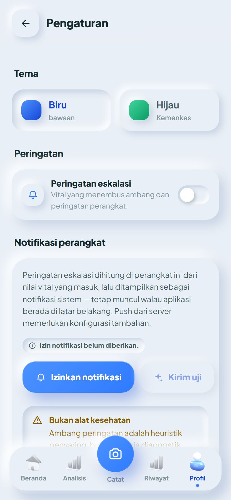

1 Sebelum mulai
Siapkan hal-hal berikut. Semuanya cukup sekali saja di awal.
Sudah terisi daya. Lihat Bagian 3.
Dengan peramban Google Chrome atau Microsoft Edge versi terbaru.
Untuk masuk ke aplikasi. Data Anda tersimpan pada akun ini.
Bluetooth untuk menyambung ke gelang, internet untuk menyimpan hasil ke server.
Untuk mengisi daya. Jangan memakai pengisi daya cepat (fast charging).
Safari dan semua peramban di iPhone/iPad tidak mendukung Bluetooth dari situs web. Di iPhone Anda tetap bisa masuk, mencatat makanan, dan melihat riwayat, tetapi pengukuran harus dilakukan dari HP Android atau laptop (atau langsung dari tombol gelang, lalu dikirim saat tersambung ke HP Android/laptop).
2 Kenali TeleBand
TeleBand adalah gelang pintar dengan layar sentuh kecil dan sensor optik di bagian belakang yang membaca denyut nadi di pergelangan tangan.
Tombol
| Tindakan | Hasilnya |
|---|---|
| Tahan PWR ±3 detik | Gelang menyala atau mati |
| Tekan PWR sekali | Layar menyala atau padam (gelang tetap hidup) — untuk menghemat baterai |
| Tekan PWR dua kali cepat | Menampilkan nomor unit gelang (berguna bila ada beberapa gelang) |
| Tekan BOOT | Mulai mengukur — layar pindah ke halaman angka |
| Tekan BOOT lagi | Berhenti mengukur — hasil disimpan di gelang dan dikirim ke aplikasi |
Tanda di layar gelang
3 Mengisi daya
TeleBand memakai baterai Li-Po 1500 mAh dan diisi lewat port USB-C di gelang.
Pengisi daya yang aman
| Boleh dipakai | Jangan dipakai | |
|---|---|---|
| Kabel | ✓ USB-A ke USB-C (ujung besar persegi panjang ke ujung kecil lonjong) | ✗ Kabel USB-C ke USB-C (kedua ujung lonjong) — gelang tidak terisi dengan aman |
| Adaptor | ✓ Adaptor HP biasa dengan port USB-A, keluaran 5 V (tertulis mis. 5V ⎓ 1A atau 5V ⎓ 2A)✓ Port USB-A di laptop/komputer |
✗ Pengisi daya cepat (fast charging): bertuliskan PD, QC/Quick Charge, SuperVOOC, Dash, Turbo, atau keluaran 9 V / 12 V / 20 V ✗ Pengisi daya laptop USB-C |
Langkah mengisi daya
- Lepaskan gelang dari pergelangan dan pastikan port USB-C kering dan bersih (lap bila berkeringat atau basah).
- Colokkan ujung USB-C ke gelang, ujung USB-A ke adaptor biasa, lalu adaptor ke stopkontak.
- Pastikan muncul ikon petir di layar gelang. Tidak muncul? Cabut lalu colokkan lagi dengan mantap.
- Tunggu sampai penuh — sekitar 3 jam dari kosong. Menjelang penuh, persen naik lebih lambat; itu normal.
- Cabut setelah penuh, lalu pakai kembali gelang.
Jangan mengisi daya di atas kasur, bantal, atau di bawah terik matahari. Hentikan pengisian dan jangan pakai gelang bila terasa sangat panas, menggembung, berbau, atau berasap — hubungi tim TeleCare.
Tergantung pemakaian — seberapa sering mengukur, berapa lama layar menyala, dan berapa lama tersambung Bluetooth. Untuk menghemat: padamkan layar dengan menekan PWR sekali, dan matikan gelang (tahan PWR) bila tidak dipakai.
4 Memakai di pergelangan tangan
Sensor membaca denyut nadi dari pembuluh darah di pergelangan. Letak yang tepat membuat angka jauh lebih akurat.
- Pakai di pergelangan tangan, bukan di jari. Sensor TeleBand disetel khusus untuk pergelangan.
- Letakkan sensor tepat di titik denyut nadi: sisi dalam pergelangan (sisi telapak tangan), segaris dengan ibu jari, sedikit di bawah lipatan pergelangan — tempat denyut nadi terasa bila diraba dengan dua jari.
- Kencangkan tali sampai sensor menempel rapat di kulit tetapi tetap nyaman — tidak boleh bergeser, tidak boleh menjepit.
- Pastikan kulit bersih dan kering di bawah sensor.
Perhitungan SpO₂ di gelang dikoreksi untuk pergelangan tangan. Bila sensor ditempel ke jari, angka SpO₂ menjadi salah (biasanya selalu tampil 100%).
Saat mengukur
- Duduk tenang 1–2 menit sebelum mulai, tangan diletakkan di meja atau paha.
- Jangan bergerak dan jangan berbicara selama pengukuran — gerakan membuat sinyal kacau.
- Hindari mengukur sesaat setelah olahraga, minum kopi, atau merokok bila ingin angka istirahat.
Air dan keringat
Keringat dan cipratan ringan (mencuci tangan, gerimis) umumnya aman. Jangan direndam, jangan dipakai mandi atau berenang, dan selalu pastikan port USB-C kering sebelum mengisi daya.
5 Membuka aplikasi TeleCare
Aplikasi TeleCare berjalan di peramban — tidak perlu mengunduh dari Play Store.
- Buka alamat
https://app-telecare.web.app/app/di Chrome atau Edge. - Pada layar pembuka, tekan Mulai Sekarang.
- Tekan Masuk dengan Google, lalu pilih akun Google Anda.
Selalu masuk dengan akun Google yang sama — data Anda melekat pada akun itu.

Lengkapi data diri (sekali saja)
Saat pertama kali masuk, aplikasi meminta nama panggilan, jenis kelamin, usia, tinggi, berat badan, tingkat aktivitas, dan tujuan kesehatan. Data ini dipakai untuk menghitung target gizi harian Anda.
Tekan Simpan & Lanjut. Anda bisa melewatinya (Lewati dulu) dan mengisinya kapan saja di Profil.
Masuk saja dengan akun Google yang sama — profil, catatan makanan, dan hasil ukur Anda ikut muncul. Langkah Lengkapi Data otomatis dilewati.

Pasang di layar utama HP (disarankan)
Supaya terasa seperti aplikasi biasa: di Chrome Android tekan menu ⋮ → Instal aplikasi atau Tambahkan ke layar utama. Ikon TeleCare akan muncul di layar utama HP.
6 Menyambungkan TeleBand
Penyambungan dilakukan dari aplikasi, bukan dari menu Bluetooth di pengaturan HP.
- Nyalakan TeleBand (tahan PWR ±3 detik) dan aktifkan Bluetooth di HP/laptop.
- Di aplikasi, buka layar TeleBand: ketuk kartu perangkat di Beranda, atau Aksi cepat → Ukur, atau Profil → Status Perangkat → TeleBand.
- Tekan Sambungkan TeleBand (atau Pindai & sambungkan TeleBand).
- Muncul daftar dari peramban. Pilih TeleCare-… lalu tekan Sambungkan / Pasangkan.
Ada beberapa gelang? Tekan PWR dua kali cepat di gelang untuk melihat nomor unitnya, lalu pilih nama yang berakhiran nomor itu. - Saat pertama kali, HP menampilkan permintaan pairing/penyandingan — setujui. Bila Android meminta izin Perangkat di sekitar atau Lokasi untuk Bluetooth, izinkan juga.
- Tersambung! Kartu menunjukkan tersambung, baterai gelang, jumlah hasil yang tersimpan di gelang, dan Jam alat: OK — jam gelang disetel otomatis dari HP.

Bila TeleBand tidak muncul di daftar, kemungkinan masih tersambung ke HP atau tab lain. Putuskan dulu di sana, atau matikan lalu nyalakan lagi gelangnya.
7 Mengukur
Ada dua cara: dari aplikasi (angka tampil langsung di HP) atau dari tombol di gelang (tanpa HP).
A. Mengukur dari aplikasi
- Pastikan gelang terpasang benar (Bagian 4) dan tersambung (Bagian 6).
- Di layar TeleBand, tekan Mulai ukur. Tahan tangan diam.
- Angka muncul dan tampak redup selama sinyal belum stabil, lalu menjadi tegas. Batang Kemajuan terisi.
- Saat kemajuan penuh, tertulis data cukup dan tombol berubah menjadi ✓ Selesai & simpan hasil. Tekan tombol itu.
Biasanya butuh beberapa puluh detik sampai sekitar dua menit. - Hasil masuk ke daftar Hasil pengukuran dengan tanda di server — artinya sudah tersimpan aman di akun Anda.
Bila ingin membatalkan, tekan Stop ukur kapan saja.

B. Mengukur dari tombol gelang (tanpa HP)
- Pakai gelang dengan benar, lalu tekan BOOT. Layar pindah ke halaman angka.
- Tahan tangan diam sampai muncul pita hijau di tepi layar (data cukup).
- Tekan BOOT lagi. Hasil tersimpan di gelang.
- Lain kali gelang tersambung ke aplikasi, hasil itu terkirim otomatis dan muncul di daftar dengan keterangan dimulai dari tombol di jam. Bisa juga dengan menekan Sinkron di layar TeleBand.
Bila penuh, hasil paling lama tertimpa. Sambungkan gelang ke aplikasi secara rutin supaya hasilnya terkirim. Hasil baru dihapus dari gelang setelah server memastikan hasil itu tersimpan.
C. Tanpa internet
Mengukur tetap bisa. Hasil ditandai menunggu kirim dan tetap disimpan di gelang maupun di HP. Begitu internet kembali, hasil terkirim otomatis — atau tekan Kirim sekarang. Tidak ada hasil yang hilang atau tercatat dua kali.
Arti angka
| Ukuran | Keterangan | Rentang acuan umum |
|---|---|---|
| Detak jantung (bpm) | Diukur langsung oleh sensor | 60–100 bpm saat istirahat |
| SpO₂ (%) | Kadar oksigen dalam darah, diukur langsung oleh sensor | 95–100% |
| Tensi* (mmHg) | Estimasi eksperimental — bukan pengukuran tensimeter | < 120/80 mmHg |
| Glukosa* (mg/dL) | Estimasi eksperimental — bukan pengukuran gula darah | tidak untuk dinilai |
* Ditandai bintang di aplikasi. Lihat Bagian 10.
8 Fitur aplikasi
Navigasi utama ada di bilah bawah: Beranda, Analisis, tombol kamera Catat di tengah, Riwayat, dan Profil.
Beranda
- Kartu perangkat — status TeleBand (tersambung/baterai). Ketuk untuk membuka layar TeleBand dan mengukur.
- Vital terkini — detak jantung, SpO₂, tensi*, dan glukosa* dari TeleBand yang sedang tersambung. Setiap kartu memberi label asal angka: dari TeleBand, estimasi eksperimental, atau belum diukur. Tanda “—” berarti belum ada pengukuran saat ini. Ketuk kartu untuk melihat grafik dan penjelasannya.
- EKG · Irama Jantung — belum tersedia. Kartu ini akan terisi setelah TeleBand mendukung pengukuran EKG.
- Ringkasan Hari Ini — capaian target kalori, karbohidrat, protein, dan lemak dari makanan yang Anda catat hari ini.
- Aksi cepat — Ukur, Catat Makan, Perangkat, Riwayat.
- Makanan Terakhir, Wawasan TeleCare AI (saran singkat dari data Anda), dan Bacaan untuk Anda.

Catat makanan
- Tekan tombol kamera Catat di tengah bilah bawah.
- Foto piring dari atas (atau pilih dari galeri). Tidak ingin memotret? Tekan Lewati.
- Aplikasi mengenali makanan secara otomatis dan menampilkannya sebagai usulan. Periksa setiap baris: tekan Ubah untuk mengganti jenis atau porsi (½ sampai 3 porsi), atau menghapusnya. Tambahkan yang terlewat dengan Tambah makanan.
- Bila makan sudah lewat, ubah Waktu makan.
- Tekan Simpan ke riwayat makanan.
Gizi dihitung dari basis data makanan aplikasi (nasi, lauk, sayur, minuman, dan hidangan umum Indonesia). Makanan yang terlihat di foto tetapi tidak ada di daftar ditampilkan terpisah — pilih padanan yang paling mirip. Foto hanya dipakai untuk dikenali dan tidak disimpan di server.

Analisis
- Tab Vital: rata-rata detak jantung dan SpO₂ per hari selama 7 hari terakhir, dihitung dari semua hasil ukur TeleBand, plus ringkasan pola pekan ini.
- Tab Gizi: asupan kalori 7 hari dibanding target, dan komposisi karbohidrat, protein, lemak.
Semakin rutin Anda mengukur dan mencatat makanan, semakin jelas trennya.

Riwayat
Profil & tujuan kesehatan
- Informasi Pribadi — nama, usia, tinggi, berat, aktivitas, beserta Indeks Massa Tubuh (IMT).
- Tujuan Kesehatan — pilih Menjaga berat badan, Menurunkan berat badan, Menjaga kestabilan gula darah, Menambah massa otot, atau Bulking. Target harian dihitung otomatis dari profil Anda (langkah perhitungannya ditampilkan), atau ketik target sendiri.
- Status Perangkat — gelang yang pernah tersambung dan pintasan ke layar TeleBand.
- Kalibrasi Tekanan Darah — catat hasil tensimeter lengan sebagai acuan.
- Riwayat Lengkap, Notifikasi, Pengaturan, Tentang TeleCare, Panduan Penggunaan, dan Keluar.



Pengaturan & peringatan
- Tema warna biru atau hijau.
- Peringatan eskalasi — aplikasi memberi tahu bila hasil ukur TeleBand berada di luar batas berikut (saat aplikasi terbuka dan sedang mengukur). Tekan Izinkan notifikasi agar peringatan tampil sebagai notifikasi HP.
- Unduh data saya (berkas JSON) dan Hapus semua data lokal (hanya di peramban itu; salinan di server tetap ada).
| Ukuran | Waspada | Kritis |
|---|---|---|
| Detak jantung | > 110 atau < 50 bpm | > 130 atau < 45 bpm |
| SpO₂ | < 94% | < 90% |
Tensi dan glukosa estimasi tidak memicu peringatan.

9 Selesai memakai
- Pastikan hasil pengukuran sudah bertanda di server.
- Di layar TeleBand, tekan Putuskan (atau cukup tutup aplikasi).
- Matikan gelang bila tidak dipakai: tahan PWR ±3 detik. Isi daya bila baterai tinggal sedikit.
- Memakai HP/laptop bersama orang lain? Keluar dari akun: Profil → Keluar. Data Anda tetap aman di server dan muncul lagi saat Anda masuk dengan akun Google yang sama.
10 Keselamatan & batasan
Angka dari TeleBand adalah perkiraan sensor untuk membantu memantau gaya hidup. Jangan dipakai untuk mendiagnosis penyakit, mengubah dosis obat, atau menunda pemeriksaan ke tenaga kesehatan.
- Tensi dan glukosa dari TeleBand adalah estimasi eksperimental yang belum tervalidasi. Untuk keputusan apa pun, gunakan tensimeter dan alat cek gula darah.
- Suhu tubuh tidak diukur, dan EKG belum tersedia.
- Ukur di pergelangan, bukan di jari (lihat Bagian 4).
Bila mengalami nyeri dada, sesak napas berat, pingsan, atau keluhan berat lainnya, segera ke IGD terdekat atau hubungi 119 — jangan menunggu hasil pengukuran.
11 Data & privasi
- Profil (nama panggilan, email, jenis kelamin, usia, tinggi, berat, aktivitas, tujuan & target gizi), catatan makanan (tanpa foto), dan hasil ukur TeleBand disimpan di server TeleCare supaya bisa dibuka dari perangkat lain.
- Yang dapat membacanya hanya Anda dan admin TeleCare yang memantau kesehatan pengguna.
- Foto makanan hanya dikirim sesaat ke layanan AI untuk dikenali dan tidak disimpan. Wawasan TeleCare AI hanya menerima ringkasan angka, tanpa nama dan email.
- Hindari membagikan tangkapan layar aplikasi di ruang publik — layar memuat data kesehatan pribadi Anda.
12 Bila ada masalah
| Masalah | Coba ini |
|---|---|
| Gelang tidak menyala | Isi daya minimal 15 menit (pastikan ikon petir muncul), lalu tahan PWR ±3 detik. |
| Ikon petir tidak muncul saat dicas | Pakai kabel USB-A ke USB-C dan adaptor biasa 5 V (bukan fast charging). Cabut–colok dengan mantap; pastikan port kering. |
| Tombol Sambungkan TeleBand tidak ada / “Web Bluetooth tidak tersedia” | Buka lewat Chrome atau Edge di HP Android atau laptop. iPhone/iPad tidak didukung. |
| TeleCare-… tidak muncul di daftar | Pastikan gelang menyala dan Bluetooth HP aktif; dekatkan gelang. Putuskan dari HP/tab lain. Matikan lalu nyalakan gelang. |
| Gagal menyambung / pairing gagal | Tutup aplikasi, matikan–nyalakan Bluetooth HP dan gelang, lalu coba lagi. Bila gelang pernah “dilupakan” di pengaturan Bluetooth HP, sambungkan ulang dari aplikasi. |
| Angka tidak muncul / tertulis “sensor belum menempel” | Kencangkan tali; pastikan sensor tepat di titik denyut nadi pergelangan dan kulit kering. |
| Kemajuan lama tidak penuh | Tahan tangan diam, jangan berbicara, letakkan tangan di atas meja. Geser sedikit posisi sensor bila perlu. |
| SpO₂ selalu 100% | Kemungkinan diukur di jari. Pakai di pergelangan (Bagian 4). |
| Hasil bertanda menunggu kirim | Periksa internet, lalu tekan Kirim sekarang. Hasil tetap aman di gelang dan HP. |
| Data tidak muncul di HP lain | Pastikan masuk dengan akun Google yang sama. Tutup lalu buka lagi aplikasi. |
| Deteksi makanan gagal / “sedang sibuk” | Coba lagi beberapa saat kemudian, atau tambahkan makanan sendiri dengan Tambah makanan. |
| Tampilan aplikasi terasa versi lama | Tutup tab lalu buka lagi aplikasi; aplikasi memperbarui dirinya sendiri. |
TeleCare — Penelitian Health 5.0 · Program Studi Fisika, FMIPA Universitas Sebelas Maret
Situs penelitian · Buka aplikasi · Panduan versi Oktober 2026